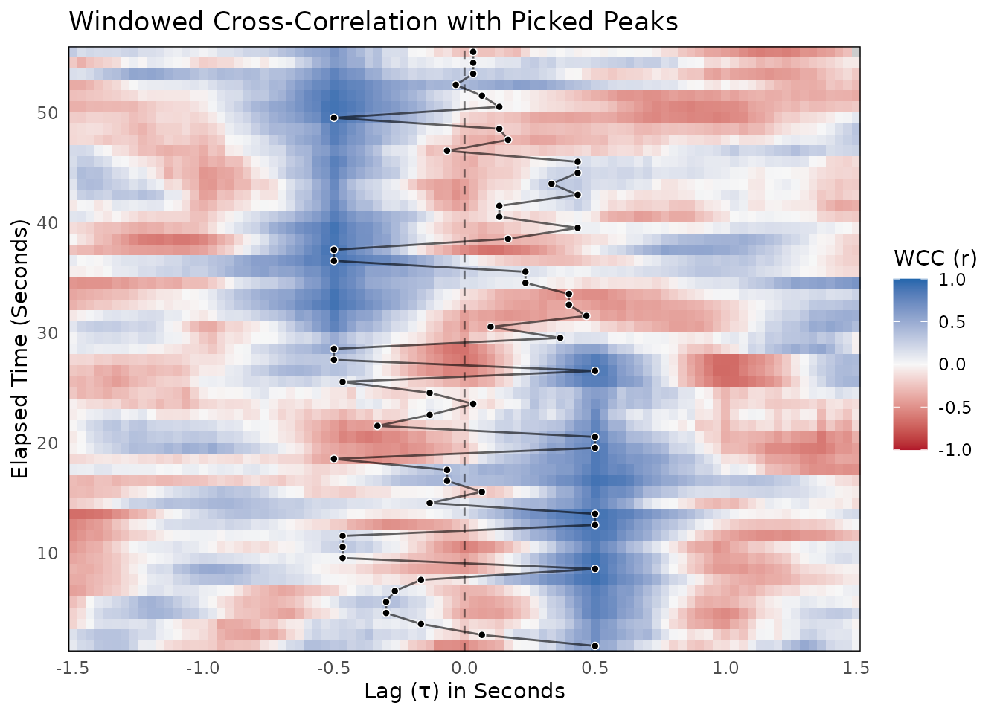

Analyzing Interpersonal Synchrony with Windowed Cross-Correlation
This vignette walks through a complete Windowed Cross-Correlation
(WCC) analysis using the bsync package. WCC is highly
effective for quantifying interpersonal synchrony because it
accommodates non-stationary relationships. Unlike global
cross-correlation, WCC captures how synchronization ebbs and flows over
time.
We will cover data simulation, calculating WCC, surrogate testing for
statistical significance, peak picking, and visualization. For guidance
on selecting the appropriate window sizes and lag parameters, please see
the suggest_wcc_params() vignette.
1. Simulating Realistic Dyadic Data
To demonstrate the workflow, we will simulate a realistic interaction between two participants (Person A and Person B) captured at 30 Hz. We will generate smooth continuous data to simulate bodily motion.
In this scenario, Person A leads the interaction by 15 frames (0.5 seconds) at the start. Over the course of the 60 seconds, the dynamic smoothly transitions until Person B leads by 15 frames at the end.
library(bsync)
set.seed(2026)
# Simulation parameters
fs <- 30
n_frames <- 1800 # 60 seconds of data
# Generate a smooth base signal using a 30-frame moving average.
# This provides enough structure to form a distinct peak within a 90-frame WCC window.
raw_noise <- rnorm(n_frames + 300)
base_signal <- stats::filter(raw_noise, rep(1/30, 30), circular = TRUE)
base_signal <- as.numeric(base_signal)
person_A <- numeric(n_frames)
person_B <- numeric(n_frames)
# Continuous lag shift: Person A leads by 15 frames, smoothly transitioning to B leading
lag_shifts <- round(seq(15, -15, length.out = n_frames))
for (i in 1:n_frames) {
idx_A <- 150 + i
idx_B <- 150 + i - lag_shifts[i]
# Add slight independent noise to mimic realistic measurement error
person_A[i] <- base_signal[idx_A] + rnorm(1, sd = 0.05)
person_B[i] <- base_signal[idx_B] + rnorm(1, sd = 0.05)
}
dyad_data <- data.frame(
time = seq(0, by = 1/fs, length.out = n_frames),
person_A = person_A,
person_B = person_B
)By adding a custom simulation here, we avoid relying on highly simplified data provided in the package’s raw data files.
2. Calculating Windowed Cross-Correlation
With our data ready, we can run the primary wcc()
function. This function slides a window across the time series and
calculates the cross-correlation at various lags within each window.
We will use a window size of 90 frames (3 seconds) and a maximum lag of 45 frames (1.5 seconds). We will also increment the window by 30 frames (1 second) to allow for overlap and smooth transitions.
wcc_results <- wcc(
x = dyad_data$person_A,
y = dyad_data$person_B,
window_size = 90,
lag_max = 45,
window_increment = 30,
lag_increment = 1
)
# View a summary of the results
summary(wcc_results)
#>
#> ── Windowed Cross-Correlation Analysis ─────────────────────────────────────────
#> Total Windows: 55
#> Total Lags Tested: 91
#> Window Size: 90
#> Max Lag: 45
#> Overall Fisher's Z: 0.3851
#>
#> ── Cross-Correlation Value Distribution ──
#>
#> 0% 25% 50% 75% 100%
#> -0.8028 -0.2108 0.0746 0.3734 0.9576
#> ! 1 missing value (NA) detected.The wcc() function returns a list object of class wcc_res containing the results data frame, the overall Fisher’s Z score, and the input settings. The summary output shows that the sliding window analyzed 55 distinct time windows across 91 different lags. The overall Fisher’s Z score of 0.3851 indicates a positive global correlation, and the quantile distribution gives us a quick look at the spread of the correlation values across the entire interaction.
3. Surrogate Testing for Significance
Time series data are inherently autocorrelated. Because of this autocorrelation, high cross-correlation values can sometimes occur purely by chance. To test if the synchronization we observed is meaningful, we generate a null distribution using the circular shift method.
The wcc_surrogate() function handles this by shifting
one time series relative to the other, destroying the true synchronous
relationship while preserving the autocorrelation of the individual
signals.
surrogate_results <- wcc_surrogate(
x = dyad_data$person_A,
y = dyad_data$person_B,
window_size = 90,
lag_max = 45,
window_increment = 30,
lag_increment = 1,
n_surrogates = 100
)
print(surrogate_results)
#>
#> ── WCC Surrogate Analysis (Pseudo-Synchrony) ───────────────────────────────────
#> Permutations: 100
#> Observed Fisher's Z: 0.3851
#> Average Null Z: 0.3015
#> Empirical p-value: < 0.01
#> ✔ Observed synchrony is significantly greater than chance.
#> ℹ Note: 100 permutations may be too few for stable p-values.
#> Consider setting `n_surrogates >= 1000` for final reporting.The output gives us an empirical p-value by calculating the proportion of surrogate Fisher’s Z scores that meet or exceed our observed Fisher’s Z. Here, our observed Z (0.3851) is higher than the average null Z (0.3015) produced by the shifted data. Because the observed value was higher than all 100 permutations, the empirical p-value is reported as < 0.01. This allows us to confidently assert that the observed synchrony is significantly greater than what we would expect by random chance. You will also notice a helpful console note pointing out that 100 permutations are generally too few for stable calculations. We use n_surrogates = 100 here for speed during exploratory analysis, but to achieve reliable p-values for publication, it is highly recommended to run at least 1,000 to 10,000 permutations.
4. Peak Picking
While the heatmap is visually informative, we often want to extract
the precise lags where coordination is strongest within each time
window. The pick_peaks() function identifies local maximums
within the WCC grid.
We specify the L_size argument to set the local search
region.
# Extract peaks using a local search size of 5
wcc_peaks_df <- pick_peaks(wcc_results, L_size = 5)
print(wcc_peaks_df)
#>
#> ── WCC Peak Picking Results ────────────────────────────────────────────────────
#> Total Peaks Found: 55
#> Local Search Size: 5
#> Strict Monotonic: FALSE
#> Showing the first 5 peaks:
#> i peak_lag peak_value
#> 46 -11 -0.06534940
#> 76 1 0.36200916
#> 106 -5 0.30862731
#> 136 -7 0.04783838
#> 166 -7 0.18667881
#> # ... with 50 more rowsThis returns a wcc_peaks data frame containing the elapsed time indices, the peak lags, and the corresponding correlation values. The summary confirms that the algorithm successfully identified 55 peaks, mapping perfectly to our 55 total time windows. It also displays the first five local maximums identified using our specified local search size.
5. Visualizing the Results
Finally, we can visualize the shifting synchronization landscape. The
plot_peaks_overlay() function generates a heatmap of the
correlations and plots the extracted peaks directly on top.
By passing the time_step argument, the axes are
automatically converted from raw frame indices to seconds.
plot_peaks_overlay(
wcc_obj = wcc_results,
peaks_df = wcc_peaks_df,
time_step = 1 / fs,
show_zero_lag = TRUE
)
In the resulting plot, you should clearly see a diagonal track of peaks. At the start, the peak synchrony sits securely at a positive lag (indicating Person A leads). As time elapses, the peak smoothly drifts across the zero-lag line until it settles at a negative lag (indicating Person B is now leading).